MCQ 1 · the physical path is the medium
Introduction: Data Communications and Networking
What a data communication system is made of, how devices connect (point-to-point or multipoint, simplex to full-duplex), the four topologies and their link formulas, LAN / MAN / WAN, how ISPs build the Internet, and why standards exist. Tutorial 1 was written from this deck, so most of its questions are linked on the slides they come from.
How to read this page
Every original slide is shown unchanged. Yellow marks on a slide point to a numbered note: hover or tap a mark to jump to its note, and hover a note to see its marks. Questions tagged Past exam appeared on a real paper; Prediction questions are likely angles, not confirmed.
All 32 slides
- 1 Introduction
- 2 Chapter 1-Part 1: Outline
- 3 Data Communications
- 4 Five components of data communication (Figure 1.1)
- 5 1.1.2 Message
- 6 1.2 Networks
- 7 Point-to-point connection (Figure 1.5)
- 8 Multipoint connection (shared) (Figure 1.6)
- 9 Data flow (direction of data flowing in the link) (Figure 1.2)
- 10 Categories of topology (Figure 1.7)
- 11 Fully connected mesh topology (for five devices) (Figure 1.8)
- 12 Star topology (Figure 1.9)
- 13 Bus topology (Figure 1.10)
- 14 Ring topology (Figure 1.11)
- 15 A hybrid topology: a star backbone with bus or ring networks
- 16 Categories of networks (Figure 1.12)
- 17 An isolated LAN in the past and today (Figure 1.8)
- 18 MAN (Figure 1.14)
- 19 LAN (two buildings) (Figure 1.13)
- 20 An internetwork made of two LANs and one WAN (Figure 1.11)
- 21 A heterogeneous network made of WANs and LANs
- 22 WAN (Figure 1.15)
- 23 1.3 The Internet
- 24 Internet Service Providers (ISPs)
- 25 Example: a tier-1 backbone (Lumen)
- 26 Internet structure: network of networks
- 27 The Internet today (Figure 1.13)
- 28 Methods of ISPs InterConnection
- 29 Internet Exchange Points (IXP)
- 30 1.4 Internet Standards
- 31 Internet Standards
- 32 Standards Organizations
Introduction
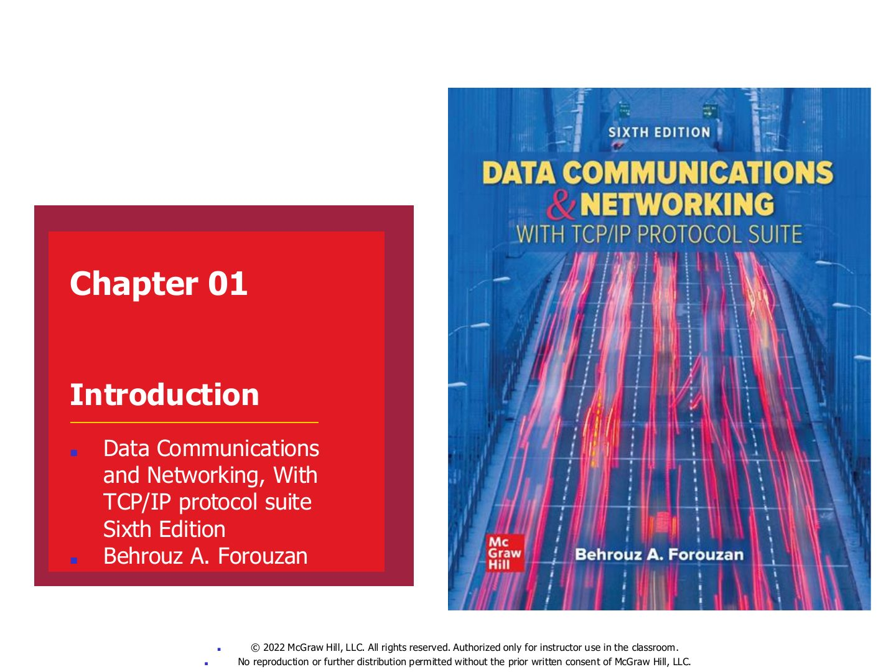
Notes
Data communication → networks (connections, topologies) → LAN / MAN / WAN → the Internet and ISPs → standards.
Tutorial 1 covers this whole deck: scenarios, MCQs, true/false, fill-in and link counts.
Chapter 1-Part 1: Outline
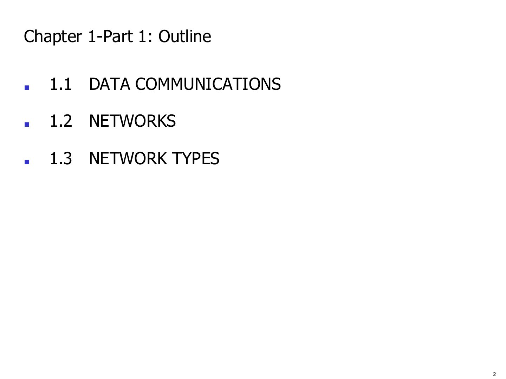
Notes
Three sections: 1.1 data communications, 1.2 networks, 1.3 network types (plus the Internet and standards at the end).
Data Communications
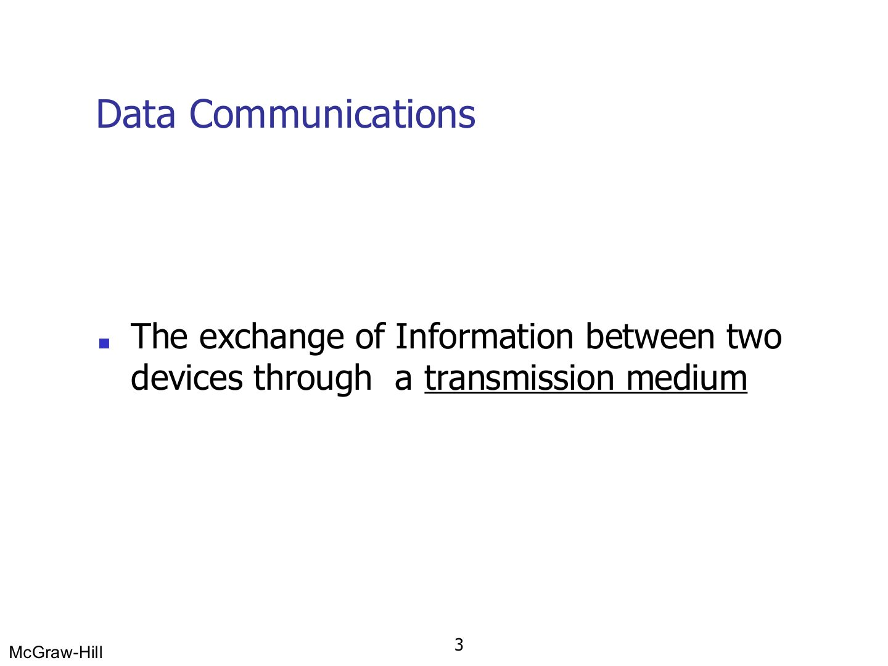
Notes
Data communication = exchanging data between TWO devices over some transmission medium (wire, fiber, air).
Seen again Ch 2 Part 2, slide 2: The transmission medium in detail
Five components of data communication (Figure 1.1)
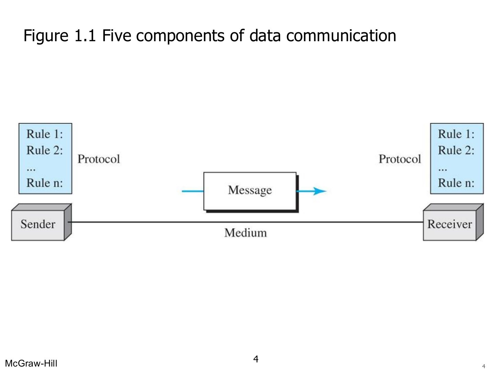
Notes
The 5 components: message, sender, receiver, transmission medium, protocol.
The protocol sits on BOTH sides: sender and receiver must follow the same rules.
Memory trick “My Sister Reads The Paper”: Message, Sender, Receiver, Transmission medium, Protocol.
Trap The medium is the physical path. The protocol is the set of rules. Don’t swap them.
Exam angle
Fill-in 1 · fifth component = protocol
The __ is the physical path over which a message travels.
- Medium
- Protocol
- Path
- Signal
Show answer
A. Medium — Tutorial 1, MCQ 1. The medium is the path; the protocol is the rules.
Which is NOT one of the five components of a data communication system?
- Router
- Message
- Protocol
- Receiver
Show answer
A. Router
List the five components of a data communication system.
Show answer
Message, sender, receiver, transmission medium and protocol.
1.1.2 Message
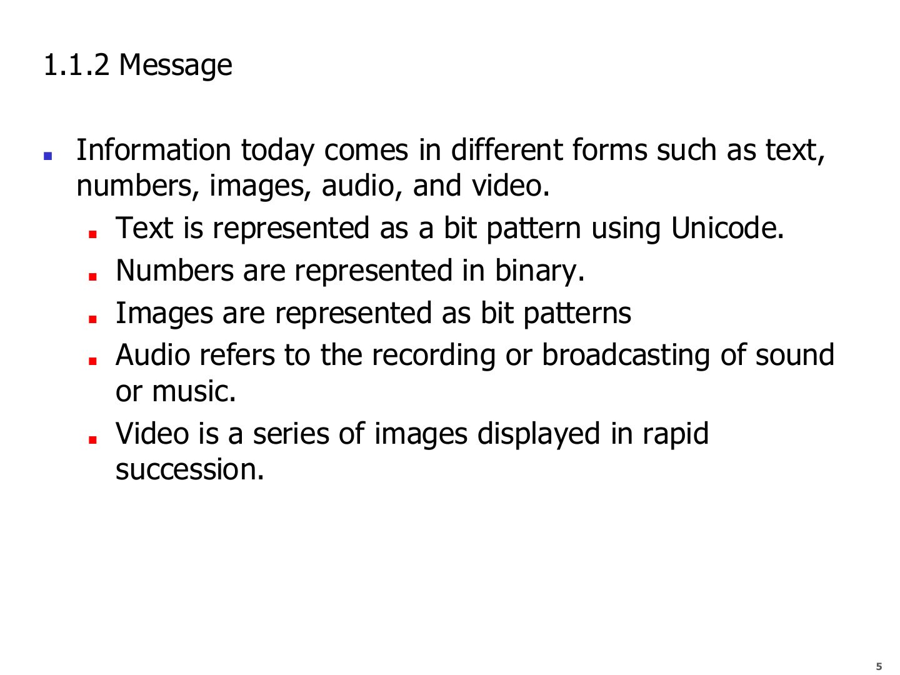
Notes
Everything becomes bits: text (Unicode), numbers (binary), images (bit patterns), audio and video (continuous or a series of images).
Exam angle
Text is represented in data communication as:
- A matrix of pixels
- A series of images
- A continuous signal
- A bit pattern using Unicode
Show answer
D. A bit pattern using Unicode
1.2 Networks
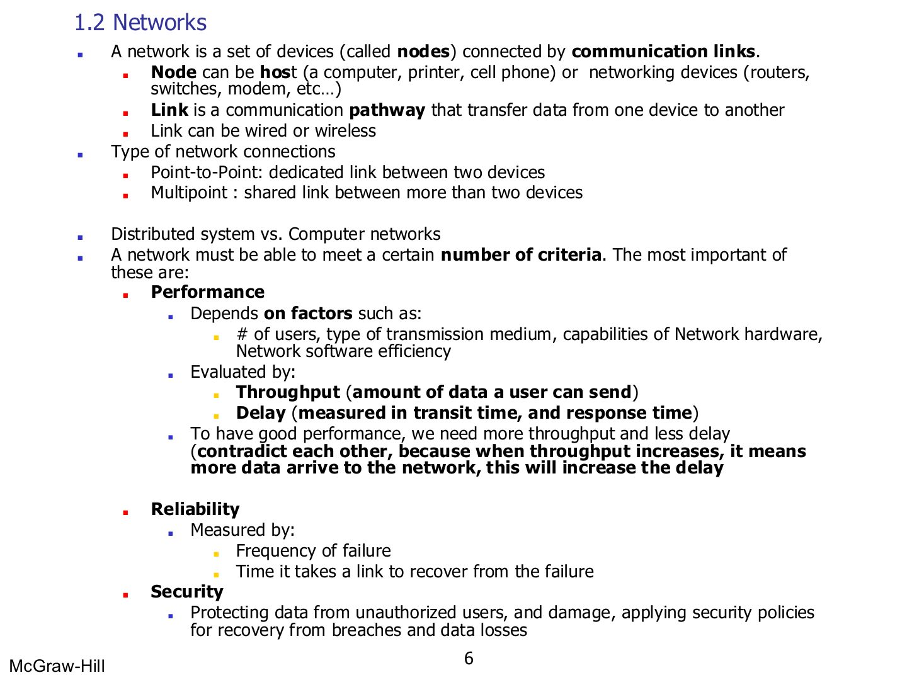
Notes
Node = any device (host or router/switch). Link = the pathway between nodes.
Point-to-point = a dedicated link for two devices; multipoint = one link shared by more than two.
The 3 criteria: performance (throughput + delay), reliability (failure frequency + recovery time) and security.
Trap More throughput and less delay pull against each other: pushing more data in raises the delay.
Memory trick Criteria = “PRS”: Performance, Reliability, Security.
Exam angle
MCQ 5 · failure frequency and recovery time = reliability
Written Q3 · the three criteria
Related question: Fill-in 3 · distributed processing
Frequency of failure and recovery time after a failure measure a network’s:
- Feasibility
- Performance
- Reliability
- Security
Show answer
C. Reliability — Tutorial 1, MCQ 5.
Network performance is evaluated by:
- Encryption strength
- Throughput and delay
- Number of nodes only
- Failure frequency and recovery time
Show answer
B. Throughput and delay
Increasing throughput usually also increases delay.
Show answer
True — More data in the network means more queuing, so delay grows.
List and explain the three criteria of an effective network.
Show answer
Performance: throughput (data a user can send) and delay (transit and response time). Reliability: how often it fails and how long a link takes to recover. Security: protecting data from unauthorized access and damage, with policies for recovering from breaches.
Point-to-point connection (Figure 1.5)
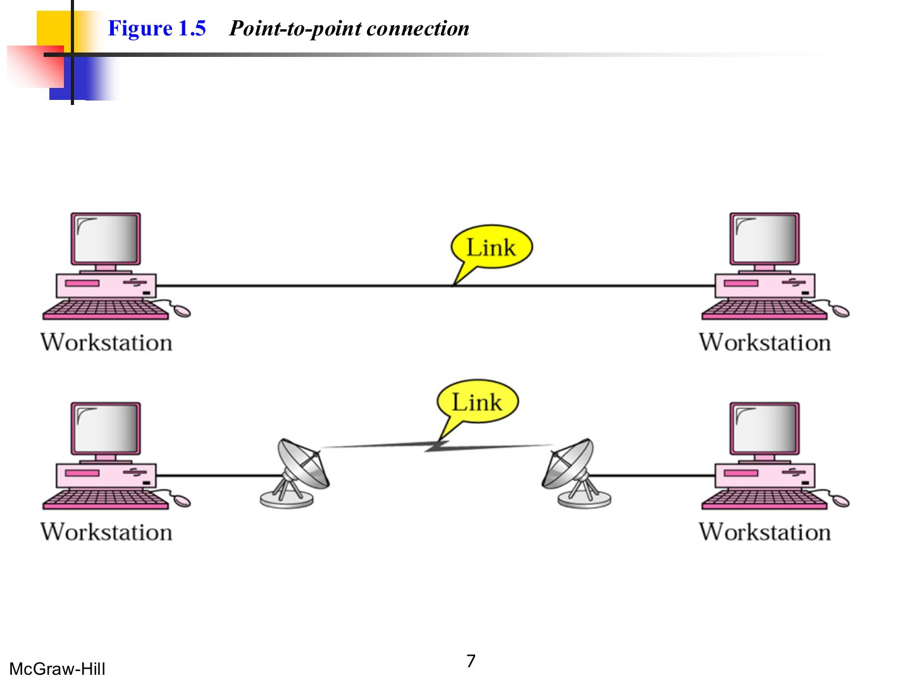
Notes
Point-to-point: a DEDICATED link between exactly two devices. Wired or wireless both count.
Exam angle
A point-to-point connection can be wireless.
Show answer
True — The figure shows a microwave/satellite link as point-to-point.
Multipoint connection (shared) (Figure 1.6)
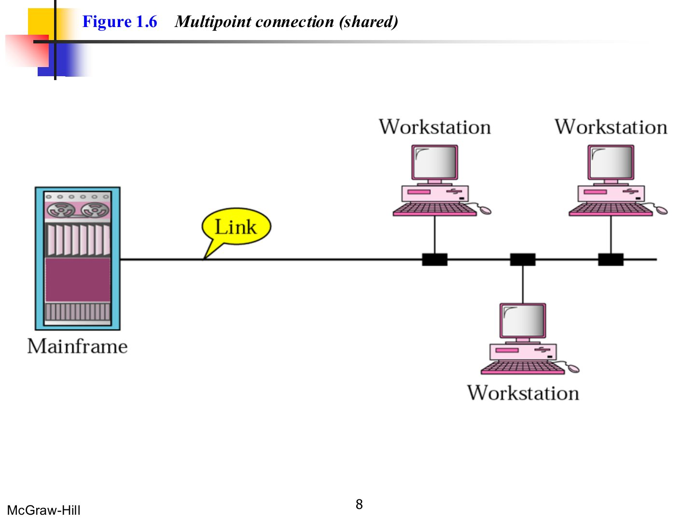
Notes
Multipoint = the link’s capacity is SHARED, in space (all at once) or in time (taking turns).
Seen again Ch 3 Part 2, slide 2: Sharing a broadcast link needs multiple access
Exam angle
MCQ 2 · more than two devices share a link
In a __ connection, more than two devices can share a single link.
- Primary
- Multipoint
- Point-to-point
- Secondary
Show answer
B. Multipoint — Tutorial 1, MCQ 2.
Data flow (direction of data flowing in the link) (Figure 1.2)
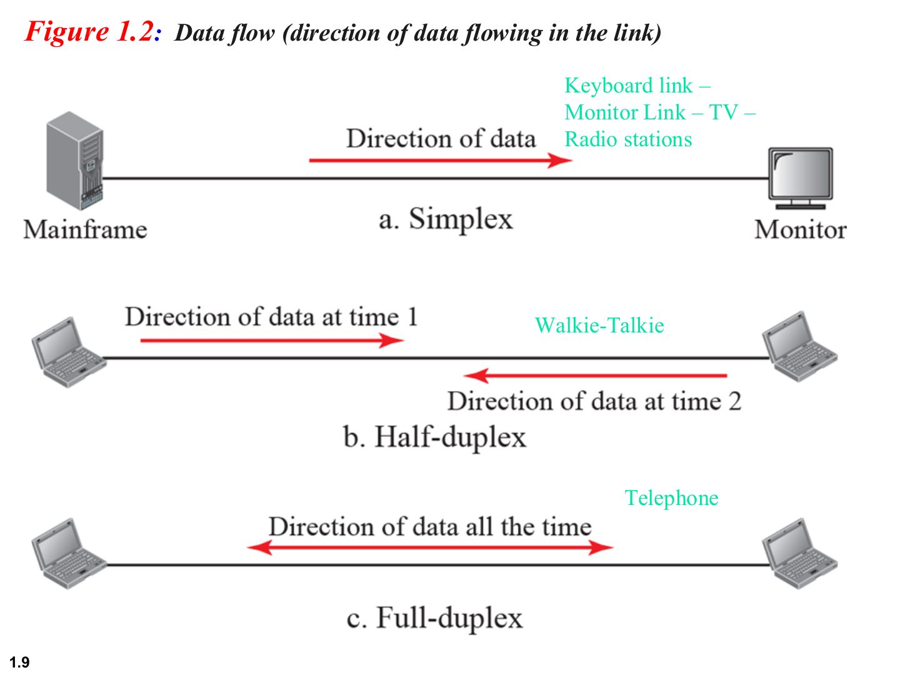
Notes
Simplex: one direction only, always (keyboard → computer, TV, radio).
Half-duplex: both directions, but one at a time; each side gets the whole channel while sending (walkie-talkie).
Full-duplex: both directions at the same time; the channel capacity is shared by the two directions (telephone).
Memory trick Half-duplex = “over” on a walkie-talkie. Full-duplex = talking over each other on the phone.
Exam angle
T/F 1 · full-duplex sends and receives at once
Fill-in 2 · capacity shared at all times = full-duplex
Written Q2 · half- vs. full-duplex with examples
In full-duplex transmission, both stations can transmit and receive simultaneously.
Show answer
True — Tutorial 1, T/F 1.
A walkie-talkie is an example of:
- Multiplexing
- Full-duplex
- Simplex
- Half-duplex
Show answer
D. Half-duplex
In which mode is the channel capacity shared by both directions at all times?
- Simplex
- Multipoint
- Full-duplex
- Half-duplex
Show answer
C. Full-duplex — Tutorial 1, fill-in 2.
Explain the difference between half-duplex and full-duplex, with a real example of each.
Show answer
Half-duplex: both sides can send but not at the same time, so they take turns and the sender uses the whole channel (walkie-talkie). Full-duplex: both send and receive at the same time and the capacity is split between the two directions (telephone call).
Categories of topology (Figure 1.7)
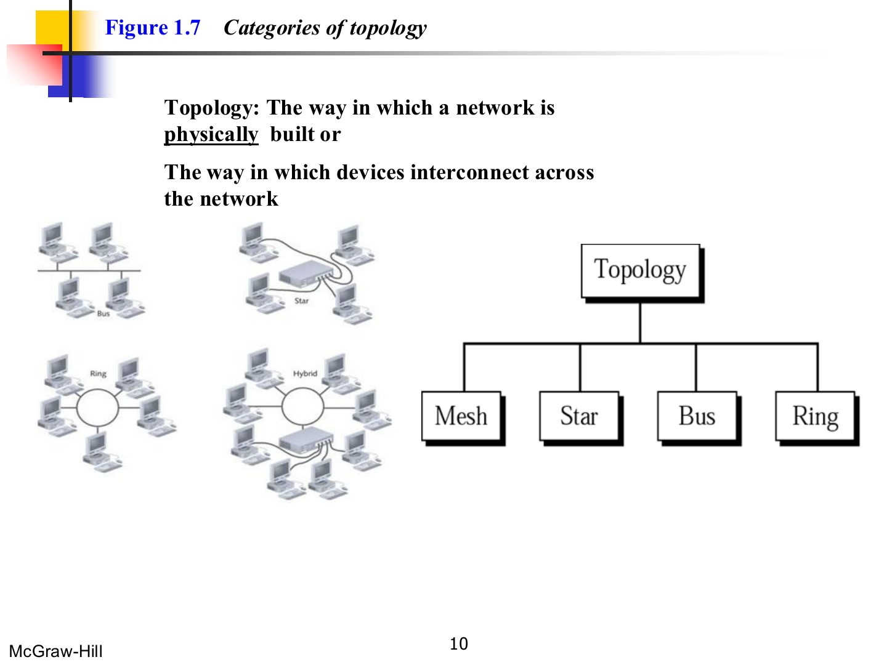
Notes
Topology = how the network is physically laid out / how devices interconnect.
Four basic ones: mesh, star, bus, ring (plus hybrids).
Memory trick Four topologies: “My Star Bus Rings” (Mesh, Star, Bus, Ring).
Fully connected mesh topology (for five devices) (Figure 1.8)
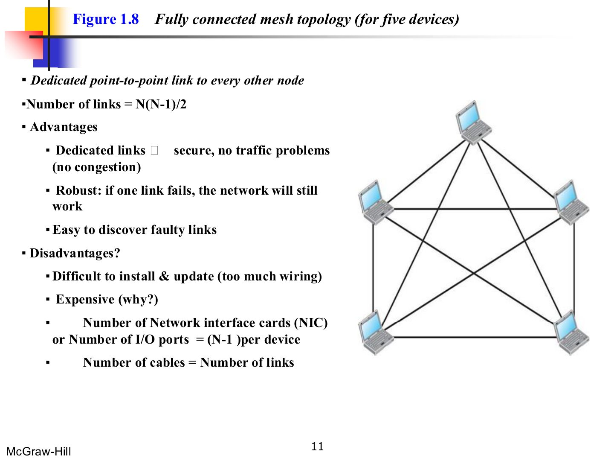
Notes
Every device has a dedicated link to every other one. Links = N(N-1)/2; each device needs N-1 ports (NICs).
Expensive because of all the cabling and ports: that is the answer to “why?”.
Memory trick N = 8 → 8 × 7 / 2 = 28 links, 7 ports per device.
Trap Ports per device is N-1, not N(N-1)/2.
Exam angle
Fill-in 4 · mesh links = n(n-1)/2
Written Q1 · links for 8 devices
Related question: Scenario 1 · offices across the world
How many links are needed for a fully connected mesh of 6 devices?
- 15
- 5
- 30
- 6
Show answer
A. 15 — 6 × 5 / 2 = 15.
In a mesh of 10 devices, how many I/O ports does each device need?
- 10
- 90
- 45
- 9
Show answer
D. 9 — N - 1 = 9.
A mesh topology has no traffic (congestion) problems because each link is dedicated.
Show answer
True
A network has 8 devices. How many cable links does a mesh, ring, bus and star need?
Show answer
Mesh: 8 × 7 / 2 = 28. Ring: 8. Bus: 1 main cable + 8 drop lines. Star: 8 (one per device to the hub).
Star topology (Figure 1.9)
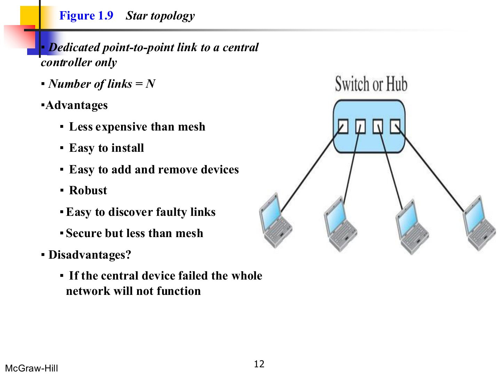
Notes
Each device links only to the central hub/switch, so devices never talk directly.
Single point of failure: the hub. One cable failing only cuts off one device.
Trap Robust ≠ fault-proof: one bad link only takes out its device, but the hub failing takes out everything.
Exam angle
MCQ 3 · needs a central controller
Scenario 2 · 20-employee office
Which topology requires a central controller or hub?
- Bus
- Mesh
- Ring
- Star
Show answer
D. Star — Tutorial 1, MCQ 3.
A 20-employee office wants every computer connected to one central device, easy to manage and to grow. Which topology, and why?
Show answer
Star. Every PC has its own link to a central switch, so adding or removing a PC is easy, a broken cable only affects one PC, faults are easy to find, and it needs less cabling than a mesh. The switch is the single point of failure.
Bus topology (Figure 1.10)
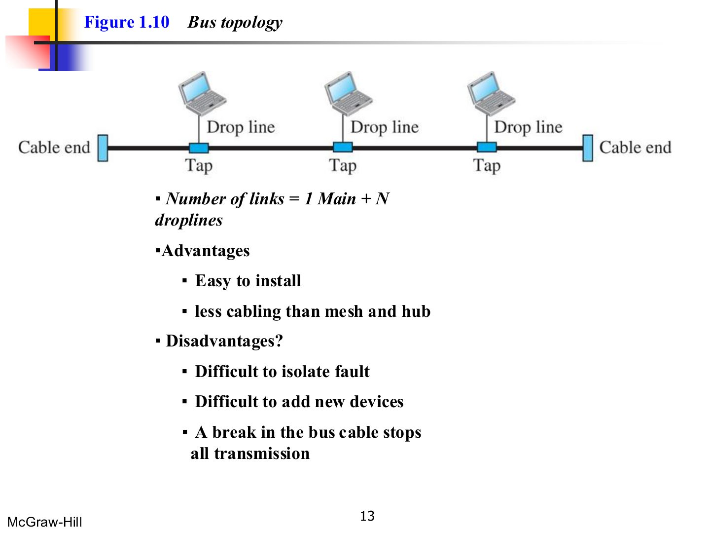
Notes
One long backbone cable; each device hangs off it on a drop line through a tap.
A break in the backbone stops ALL transmission, and faults are hard to isolate.
Tip Formulas for N devices: mesh N(N-1)/2 links and N-1 ports each · star N links · ring N links · bus 1 main cable + N drop lines.
Exam angle
T/F 4 · one break stops the bus
In a bus topology, one break in the cable can stop all transmissions on the segment.
Show answer
True — Tutorial 1, T/F 4.
A main cable plus N drop lines describes:
- Ring
- Mesh
- Bus
- Star
Show answer
C. Bus
Ring topology (Figure 1.11)
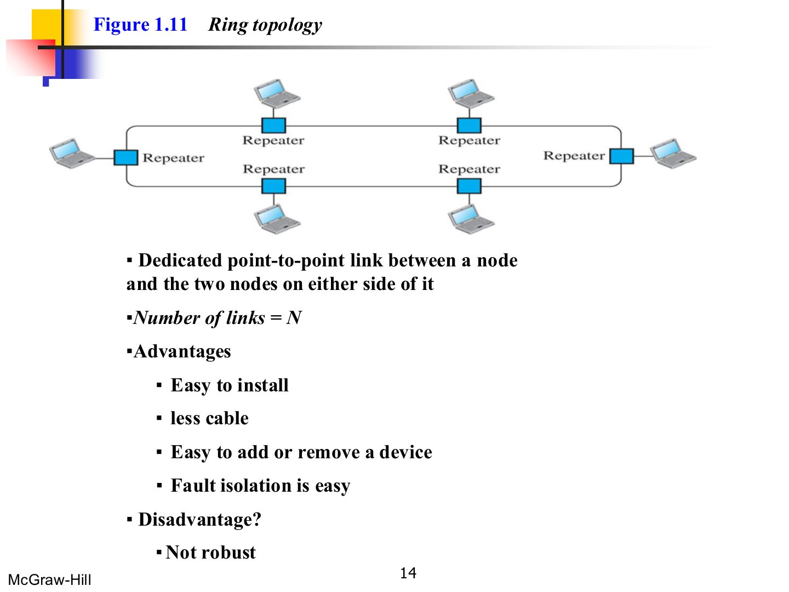
Notes
Each device links to its two neighbours; the signal goes round the ring through each device’s repeater.
Not robust: one broken link or device can break the ring (unless it is a dual ring).
Exam angle
A ring of 12 devices needs how many links?
- 66
- 11
- 13
- 12
Show answer
D. 12 — Ring: N links.
Fault isolation is easy in a ring topology.
Show answer
True — Listed as an advantage on the slide.
A hybrid topology: a star backbone with bus or ring networks
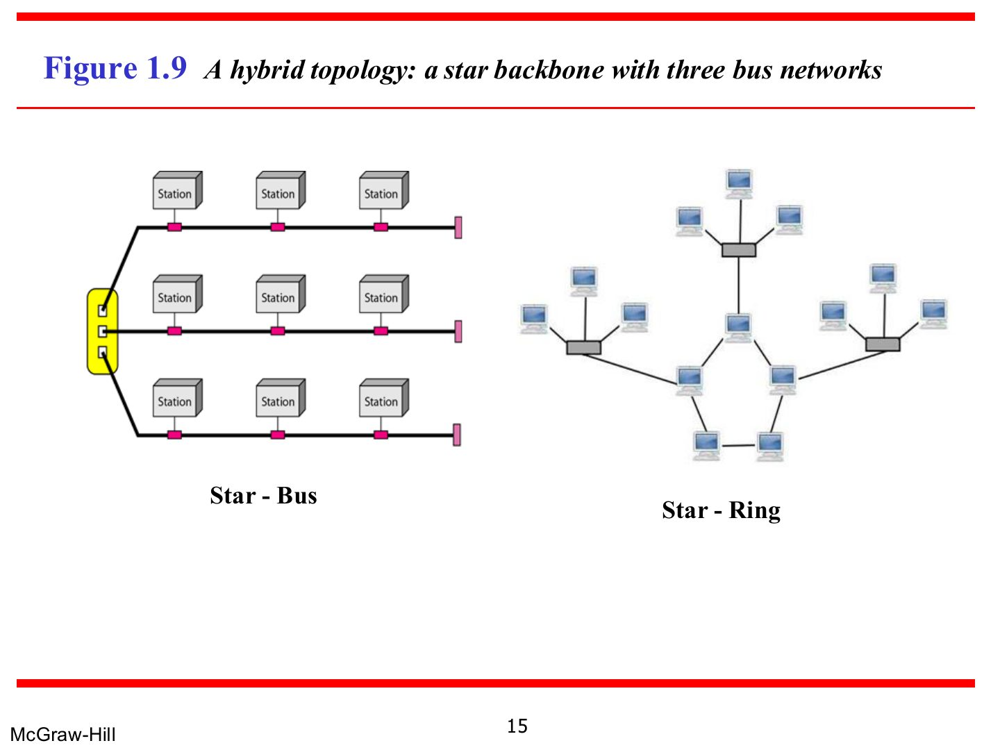
Notes
Hybrid = a mix, e.g. a star backbone with buses or rings hanging off it.
Exam angle
Related question: Scenario 1 · connecting offices worldwide
Categories of networks (Figure 1.12)
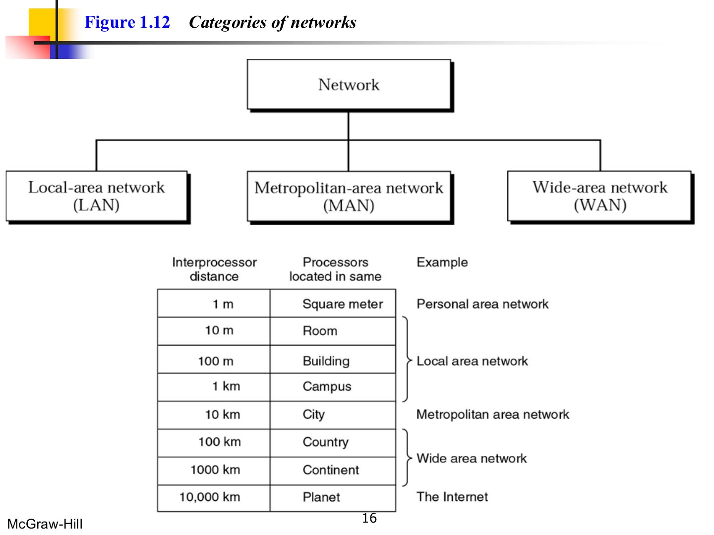
Notes
Classified by size: LAN (room → campus, ~1 km), MAN (a city, ~10 km), WAN (country / continent).
A LAN does NOT cover more than about 2 miles: that is the Tutorial 1 trap.
Exam angle
T/F 2 · LAN larger than 2 miles (false)
A LAN typically covers an area larger than 2 miles in diameter.
Show answer
False — Tutorial 1, T/F 2. LANs cover a room, building or campus.
A network spanning a city is a:
- PAN
- MAN
- WAN
- LAN
Show answer
B. MAN
An isolated LAN in the past and today (Figure 1.8)
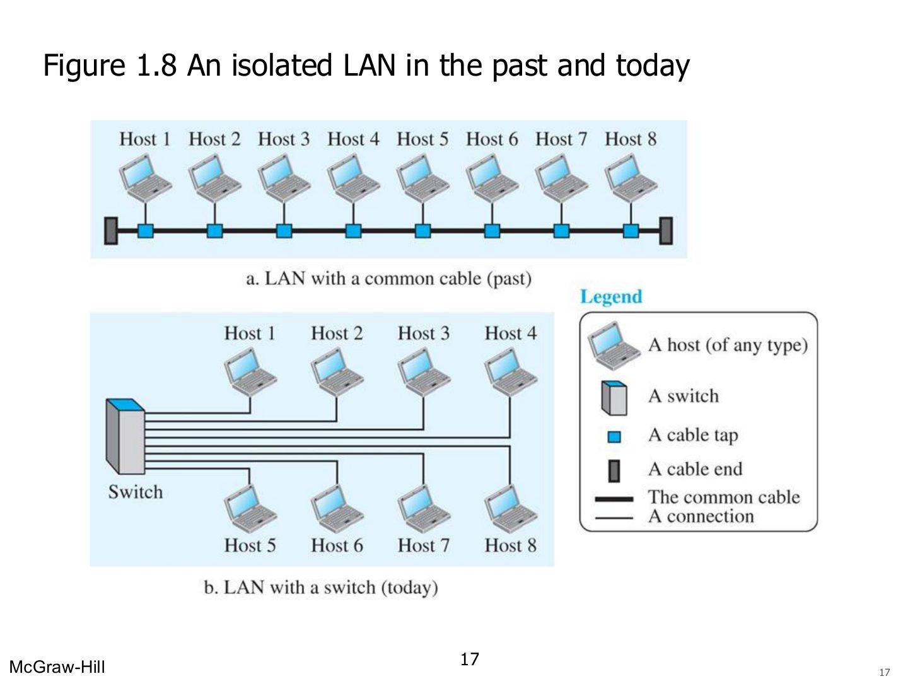
Notes
Past LANs: all hosts on a shared cable (bus). Today: every host has its own link to a switch (star).
Seen again Ch 4, slide 24: Switched Ethernet replaced the shared bus
MAN (Figure 1.14)
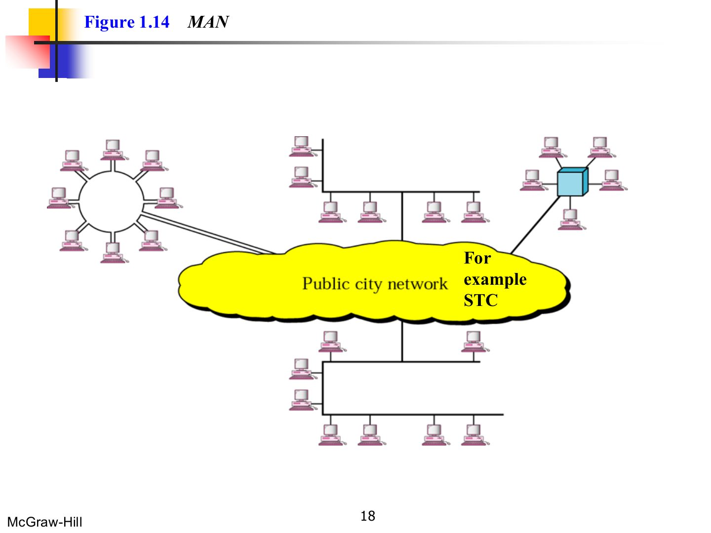
Notes
MAN: covers a town or city, often run by a telecom company (the slide’s example: STC).
LAN (two buildings) (Figure 1.13)
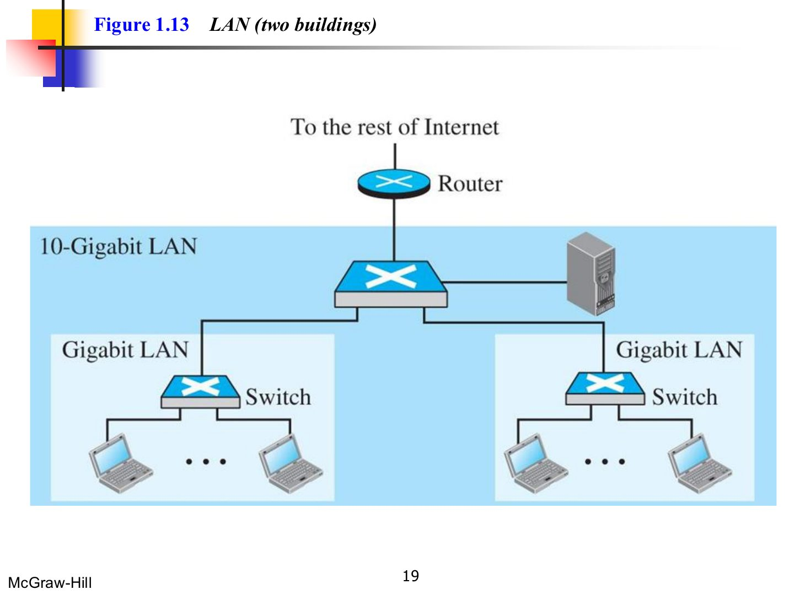
Notes
LANs are built in layers: switches per building, a faster backbone switch, one router out to the Internet.
An internetwork made of two LANs and one WAN (Figure 1.11)
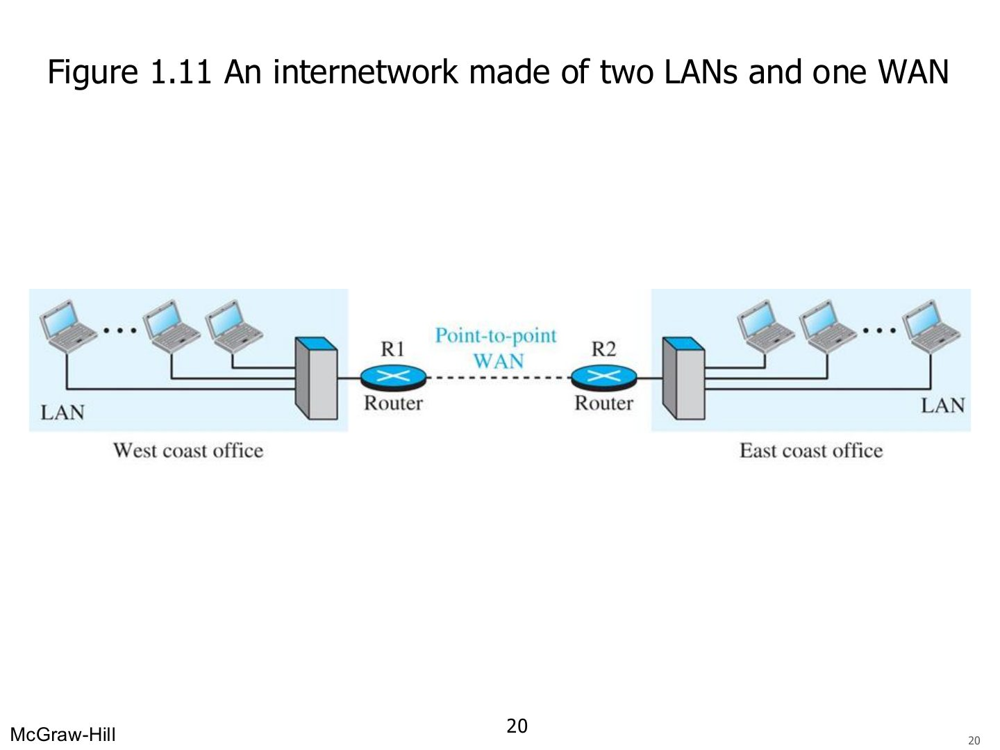
Notes
Internetwork (an internet, small i) = two or more networks joined by routers.
The Internet (capital I) is one specific, worldwide internet.
Exam angle
T/F 5 · internet vs. Internet
An internet (lowercase i) is the same as the Internet (uppercase I).
Show answer
False — Tutorial 1, T/F 5. Any two connected networks form an internet; the Internet is the global one.
A heterogeneous network made of WANs and LANs
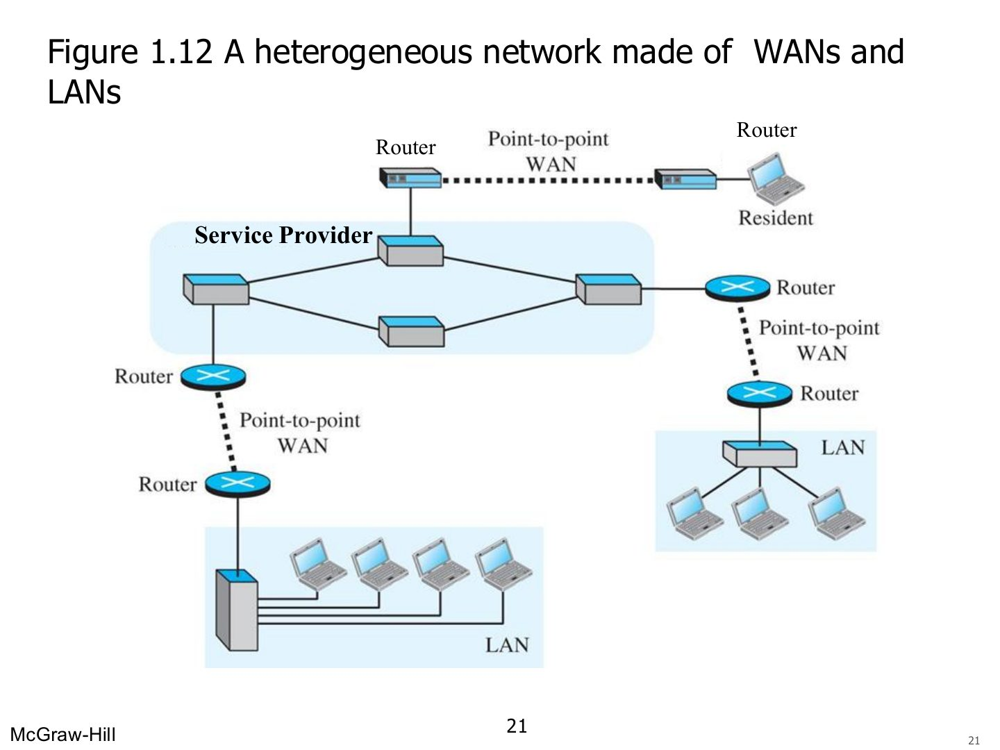
Notes
Real networks mix LANs and point-to-point WANs; routers sit at every boundary.
WAN (Figure 1.15)
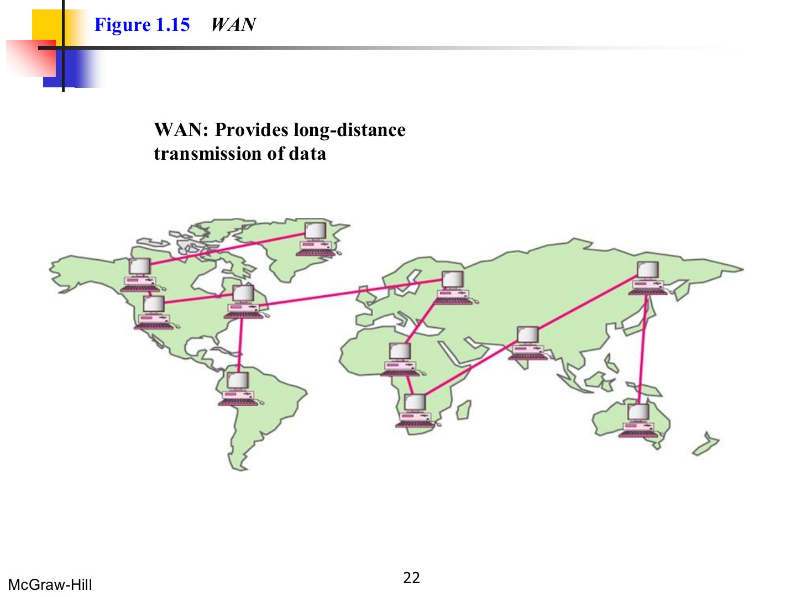
Notes
WAN: countries and continents. Usually a mesh or hybrid of point-to-point links.
Exam angle
Scenario 1 · New York, London, Tokyo, Sydney
A company links its New York headquarters with offices in London, Tokyo and Sydney, needing high-speed, reliable and secure links. What kind of network and topology fit?
Show answer
A WAN. A mesh (or hybrid mesh) of dedicated point-to-point links between the sites gives redundancy if one link fails, dedicated capacity, and better security for the financial data.
1.3 The Internet
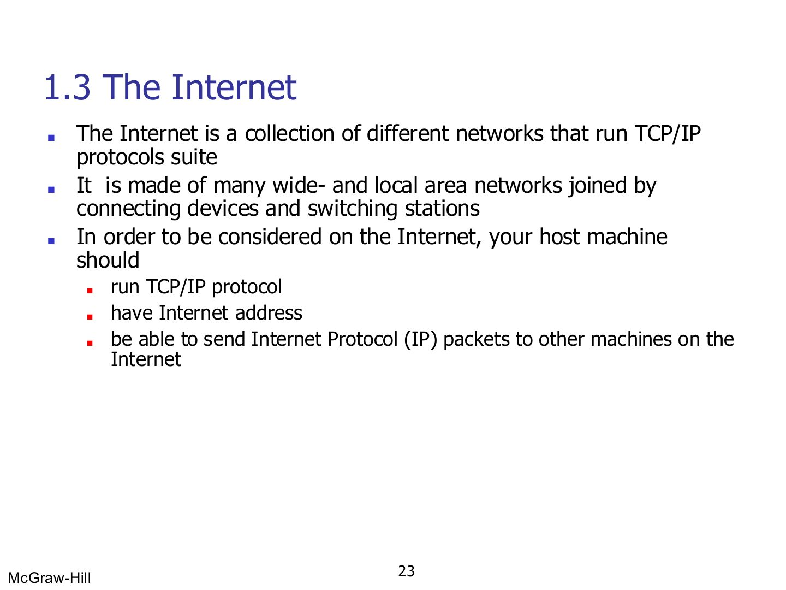
Notes
The Internet = many networks that all run TCP/IP.
To be “on the Internet” a host must run TCP/IP, have an Internet (IP) address, and send IP packets.
Seen again Ch 1 Part 2, slide 14: The TCP/IP layers
Exam angle
MCQ 4 · TCP/IP is the Internet’s protocol suite
__ is the protocol suite of the current Internet.
- ACM
- TCP/IP
- UNIX
- NCP
Show answer
B. TCP/IP — Tutorial 1, MCQ 4.
Internet Service Providers (ISPs)
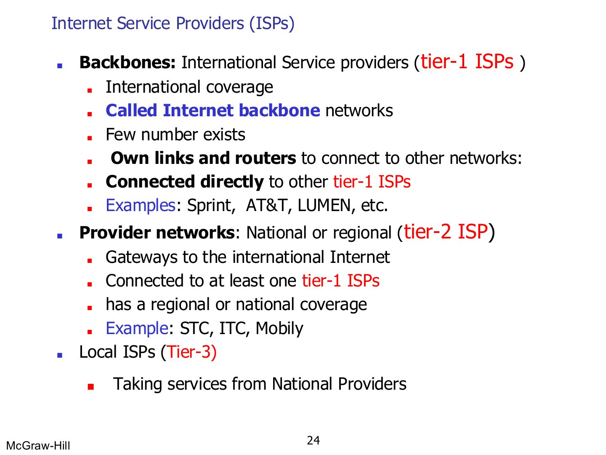
Notes
Tier 1 = backbones: international, few of them, own their links, connect directly to each other.
Tier 2 = national/regional providers (STC, Mobily); connect to at least one tier-1.
Tier 3 = local ISPs that buy service from the national providers.
Memory trick Tier number goes UP as you get closer to the customer: 1 = global, 2 = national, 3 = local.
Exam angle
STC and Mobily are examples of:
- IXPs
- Tier-2 (provider network) ISPs
- Local tier-3 ISPs
- Tier-1 backbones
Show answer
B. Tier-2 (provider network) ISPs
Tier-1 ISPs connect directly to other tier-1 ISPs.
Show answer
True
Example: a tier-1 backbone (Lumen)
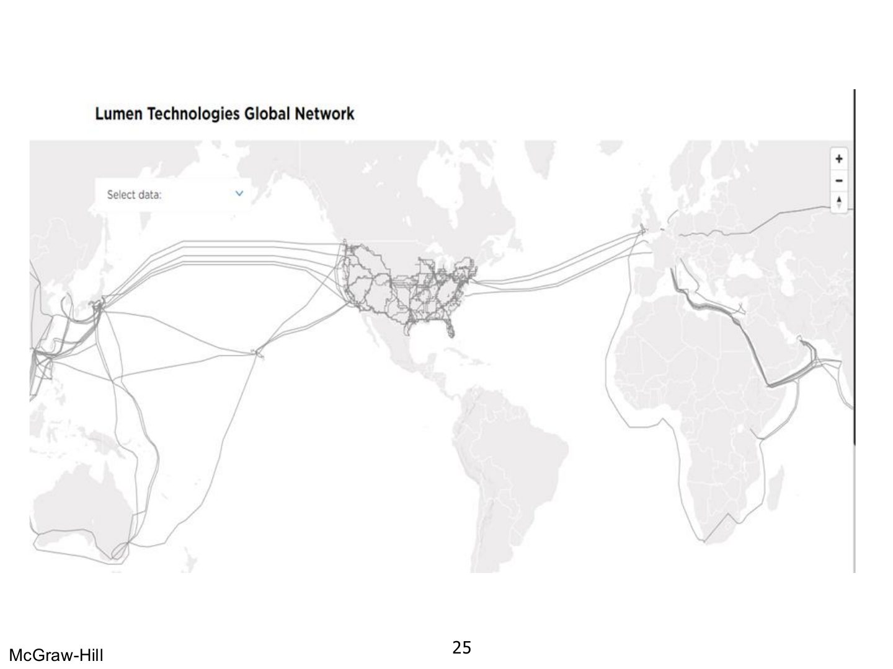
Notes
A tier-1 network owns links on every continent.
Internet structure: network of networks
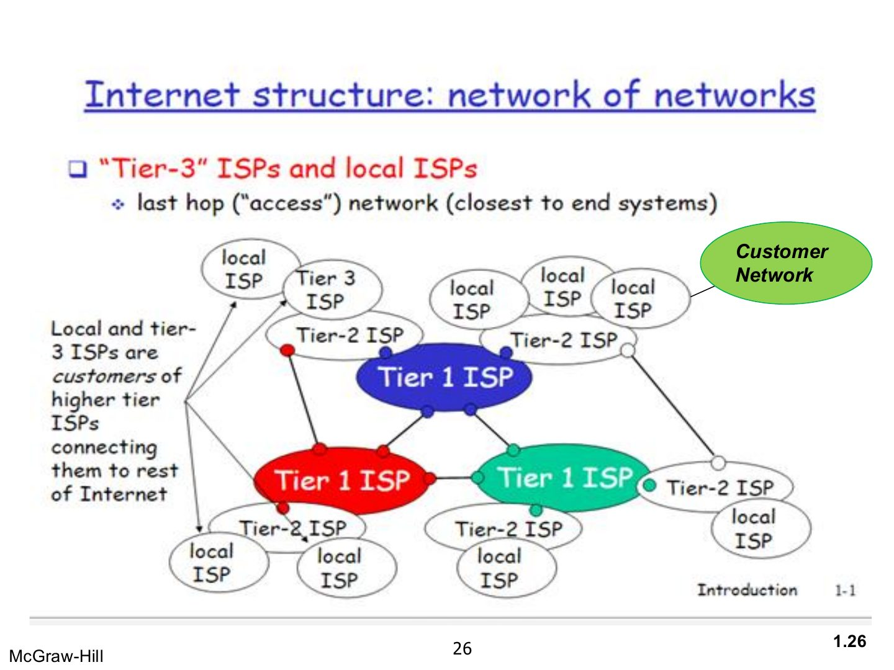
Notes
Local and tier-3 ISPs are customers of the higher tiers; the “last hop” to end systems is the access network.
The Internet today (Figure 1.13)
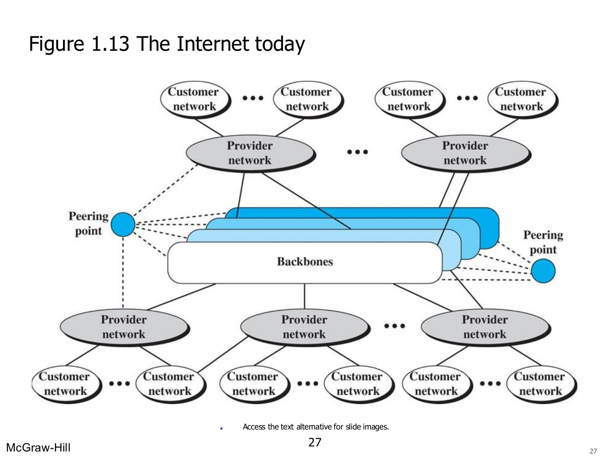
Notes
Backbones in the middle, joined at peering points; provider networks hang off them; customers at the edge.
Methods of ISPs InterConnection
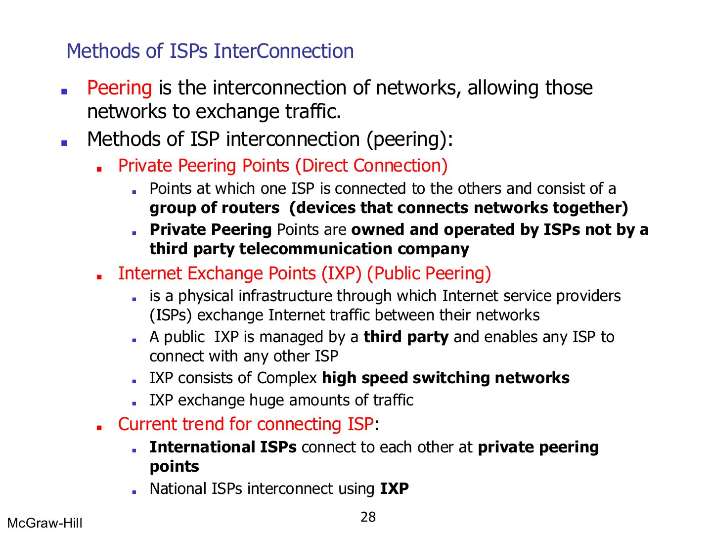
Notes
Private peering: ISPs connect directly; the points are owned and run by the ISPs themselves.
IXP (public peering): a third party runs a high-speed switching network where any ISP can connect.
Today: international ISPs use private peering; national ISPs meet at IXPs.
Trap Private peering points are run by the ISPs; an IXP is run by a THIRD party.
Exam angle
An Internet Exchange Point (IXP) is managed by:
- IEEE
- A third party
- The end customer
- The largest tier-1 ISP
Show answer
B. A third party
National ISPs usually interconnect using IXPs.
Show answer
True
Internet Exchange Points (IXP)
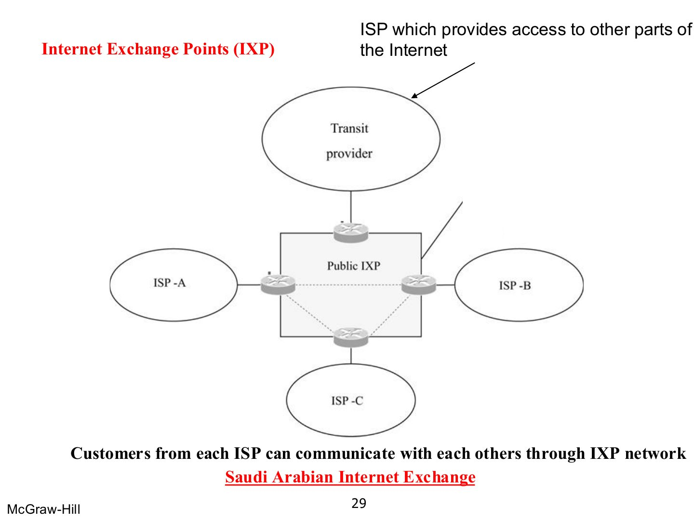
Notes
Customers of each ISP reach each other through the IXP instead of going abroad. Example: the Saudi Arabian Internet Exchange.
1.4 Internet Standards
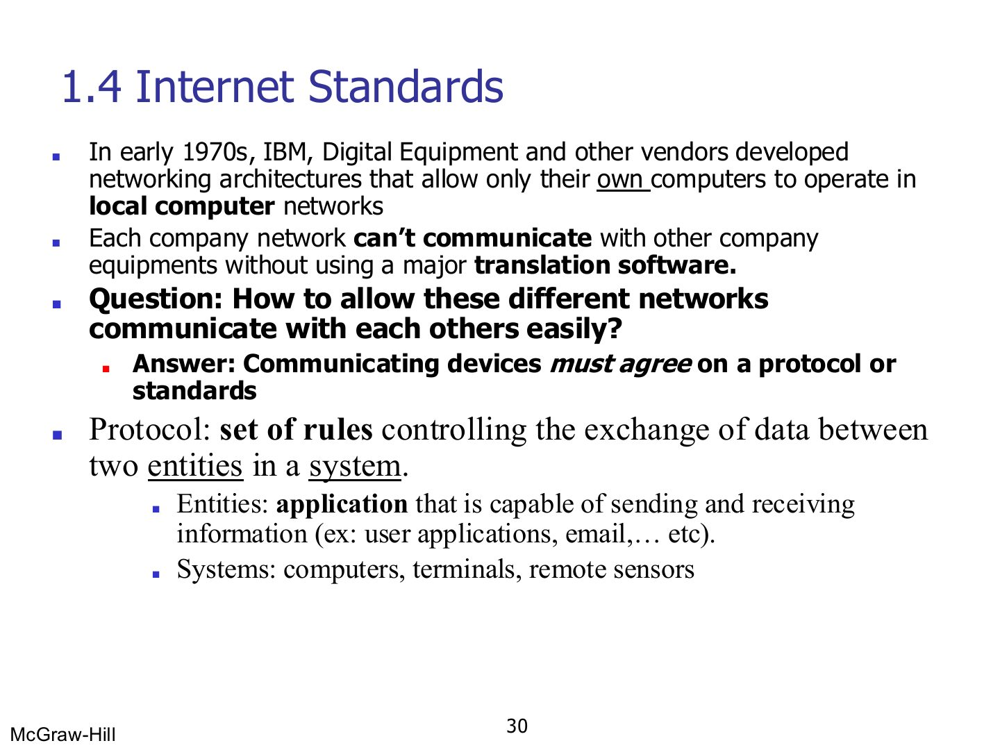
Notes
Early vendor networks could not talk to each other without translation software, which is why we need standards.
Protocol = a set of rules controlling data exchange between two entities in a system.
Trap “A protocol is the structure or format of the data” ✗. That is only syntax, one element of a protocol.
Seen again Ch 1 Part 2, slide 2: Protocol layering
Exam angle
T/F 3 · protocol = format of data (false)
A protocol is defined as the structure or format of data.
Show answer
False — Tutorial 1, T/F 3. That is syntax; a protocol is the whole set of rules.
A protocol is best defined as:
- A set of rules controlling data exchange
- A data format only
- A network device
- The physical path of a message
Show answer
A. A set of rules controlling data exchange
Internet Standards
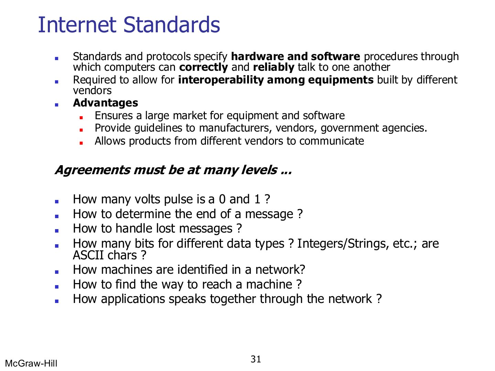
Notes
Standards = interoperability: gear from different vendors can work together.
Agreements are needed at many levels: voltages for 0/1, message boundaries, lost messages, addressing, routing, applications. Each turns into a layer later.
Seen again Ch 1 Part 2, slide 2: Layers split these agreements up
Exam angle
Written Q4 · why standards matter
Why are standards important in data communications? Give examples.
Show answer
They guarantee interoperability between equipment from different vendors, create a large market for hardware and software, and guide manufacturers and agencies. Examples: Ethernet (IEEE 802.3) lets any NIC talk to any switch; TCP/IP lets any computer join the Internet.
Standards Organizations
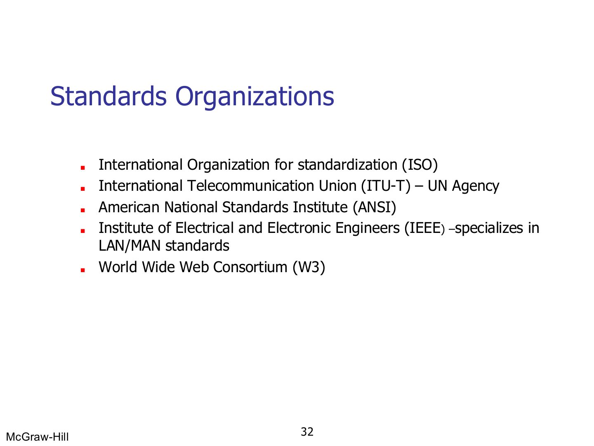
Notes
ISO (international), ITU-T (UN telecom agency), ANSI (US), IEEE (LAN/MAN, e.g. 802.3 Ethernet), W3C (the web).
Seen again Ch 4, slide 3: IEEE 802 LAN standards
Exam angle
Which organization specializes in LAN/MAN standards?
- W3C
- ITU-T
- ANSI
- IEEE
Show answer
D. IEEE